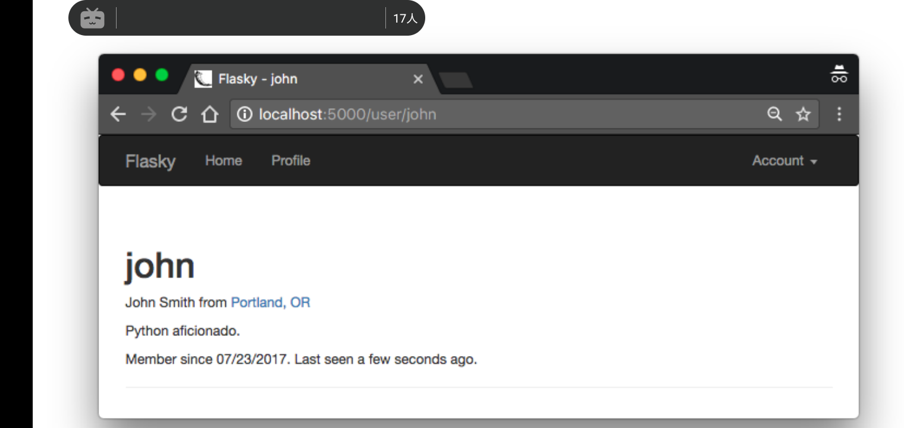

Chapter 10: User Profiles
Overview
本章将为flasky实现用户配置功能。所有具有社交属性的app都提供一个用户配置网页，该网页显示用户在app中分享的信息以及个人信息。该配置页面的网址尽可能简短以及方便记忆，这是很重要的，因为要分享链接。
Profile Information
为了使用户配置网页更加有吸引力，可以将有关用户的额外信息存入数据库。以下是更新后的User模型:
# app/models.py: user information fields class User(db.Model, UserMixin): #... name = db.Column(db.String(64)) location = db.Column(db.String(64)) about_me = db.Column(db.Text()) member_since = db.Column(db.DateTime(), default=datetime.utcnow) # utcnow函数对象，而不是调用 last_seen = db.Column(db.DateTime(), default=datetime.utcnow)
新字段存储了用户的real name, location, 个人简历，date of registration, and date of last visit。 about_me字段类型是db.Text().db.String和db.Text的区别是db.Text是变长字符串，无需指定最大字符串长度。
定义的两个时间戳拥有当前时间的默认值。注意datetime.utcnow是没有()结尾的。因为db.Column的default参数接受一个函数对象而不是函数表达式。每一次default参数需要产生默认值时，SQLAlchemy会调用用户提供的回调函数来生成该默认值。member_since也一样。
last_seen字段也以距app创建开始到现在的时间作为默认值。但是每一次用户访问app时，该字段需要刷新。以下是执行该任务的函数代码:
# app/models.py: refreshing a user's last vist time class User(db.Model, UserMixin): #.. def ping(self): self.last_seen = datetime.utcnow() db.session.add(self) db.session.commit()
为了保证所有用户访问app时，last_seen字段可以自动刷新，ping()方法必须在每一次app接受到来自用户的请求时执行。因为auth蓝图使用app级别的before_app_request装饰器，使得request钩子在每一个请求被处理前自动执行，因此这里是执行自动刷新的最好地方。以下是代码:
# app/auth/views.py: pinging the logged-in user
@auth.before_app_request
def before_request():
if current_user.is_authenticted():
current_user.ping()
if not current_user.confirmed \
and request.endpoint \
and request.blueprint != 'auth' \
and request.endpoint != 'static':
return redirect(url_for('auth.unconfirmed'))
User Profile Page
以下是用户配置信息页的代码:
# app/main/views.py: profile page route
@main.route('/user/<username>')
def user(username):
user = User.query.filter_by(username=username).first()
return render_template('user.html', user=user)
上述路由存在于main蓝图。例如，对于用户john, 该配置信息页面的地址为http://localhost:5000/user/john.app 会在数据库中搜索地址中出现的username标识的用户，如果找到，user.html模版会被渲染。发送的请求中的username若是无效，则会返回404错误。在SQLAlchemy中，可以使用request的first_or_404()方法同时处理搜索和返回错误的任务。以下是被渲染的user.html模版的初始版本:
# app/templates/user.html: user profile template
{% extends 'base.html' %}
{% block title %}Flasky - {{ user.username }} {% endblock %}
{% block content %}
<div class="page-header">
<h1>{{ user.username }}</h1>
{% if user.username or user.location %}
<p>
{% if user.name %}{{ user.name }}{% endif %}
{% if user.location %}
From <a href="http://maps.google.com/?q={{ user.location }}">
{{ user.location }}
</a>
{% endif %}
</p>
{% endif %}
{% if current_user.is_administrator() %}
<p><a href="mailto:{{ user.email }}">{{ user.email }}</a></p>
{% endif %}
{% if user.about_me %}<p>{{ user.about_me }}</p>{% endif %}
<p>
Member since {{ moment(user.member_since).format('L') }}.
Last seen {{ moment(user.last_seen).fromNow() }}.
</p>
</div>
{% endblock %}
上述模版有一些有趣的实现细节:
- name和location字段在同一个p元素中被渲染。jinja2渲染条件命令保证只有两者中至少存在一个时才吃创建该p元素。
- location字段被渲染成一个指向谷歌地图的链接。
- 如果已登陆用户为管理员，那么app会向管理员显示其正在查看的当前其他用户的配置页面上的邮件地址。这便于管理员联系拥有该配置页面的用户。
- 使用flask-moment来渲染两个时间戳。
因为大多数用户希望可以很容易地访问他们自己的配置页面。因此可以向base.html模版中的导航条中添加指向它的链接。以下是代码:
# app/templates/base.html: add link to profile page in the navigation bar
{% if current_user.is_authenticated %}
<li>
<a href="{{ url_for('main.user', username=current_user.username) }}">
Profile
</a>
</li>
{% endif %}
使用jinja2条件来渲染页面链接是很重要的，因为导航条不仅要渲染给已登陆用户，还要渲染给匿名用户，如果是匿名用户，该指向配置页面的链接会被跳过。以下是配置页面的截图:

Profile Editor
Overview
有两种涉及用户配置信息编辑的用例。一种明显的方式是用户可以访问一个带有表单的页面，用户可以填写表单来提交修改自己的个人信息。还有一种不是很明显但是相当重要的要求--管理员可以修改其他用户的个人信息，以及一些普通用户无法访问的涉及User模型的信息，比如用户角色啊之类的。两种本质上完全不同的用户·信息编辑需求需要两种表单来处理。
以下是用户级别编辑的表单定义:
# app/main/forms.py: edit profile form
class EditProfileForm(FlaskForm):
name = StringField('Real Name', validators=[Length(0, 64)])
location = StringField('Location', validators=[Length(0, 64)])
about_me = TextAreaField('About me')
submit = SubmitField('Submit')
注意这里所有的字段都是可选的，长度验证器允许该字段为空。以下是处理该表单的路由:
# app/main/views.py: edit profile route
@main.route('/edit-profile', methods=['POST', 'GET'])
@login_required
def edit_profile():
form = EditProfileForm()
if form.validate_on_submit():
current_user.name = form.name.data
current_user.location = form.location.data
current_user.about_me = form.about_me.data
db.session.add(current_user._get_current_object())
db.session.commit()
flash('You profile has been updated')
return redirect(url_for('.user', username=currrent_user.username))
#填充
form.name.data = current_user.name
form.location.data = current_user.location
form.about_me.data = current_user.about_me
return render_template('edit_profile.html', form=form)
在上述表单中，可以通过form.<field-name>.data来获取表单字段的数据。该语句不仅可以获取用户填入表单提交的表单字段数据，还可以在表单渲染时赋予各表单字段初始值。当form.validate_on_submit()为False时，app使用current_user中的数据来赋予表单各字段初始值。当用户提交表单时，各表单字段的data保存了更新后的值，在重定向之后，表单会显示当前用户最新的信息。
为了方便用户编辑，可以将编辑信息的链接嵌入用户信息显示页面。
# app/templates/user.html: edit profile link
{% if user == current_user %}
<a class="btn btn-default" href="{{ url_for('.edit_profile') }}">
Edit Profile
</a>
{% endif %}
包含链接的条件判断用于限制普通用户只能编辑他们自己的信息。
Administrator-Level Profile Editor
管理员使用的用户信息编辑表单相比更加复杂。除了可以修改最基本的三个字段外，管理员还可以修改用户的邮件地址， 用户名， 验证状态，和角色。表单如下:
# app/main/forms.py: profile editing for administrator
class EditProfileAdminForm(FlaskForm):
email = StringField('Email', validators=[DataRequired(), Length(0, 64), Email()],
Regexp('^[A-Za-z][A-Za-z0-9_.]*$', 0, 'Username must have only letters, number , dots or underscores')])
confirmed = BooleanField('Comfirmed')
role = SelectField('Role', coerce=int)
name = StringField('Real name', validators=[Length(0, 64)])
location = StringField('Location', validators=[Length(0, 64)])
about_me = TextField('About me')
submit = SubmitField('Submit')
def __init__(self, *args, **kwargs):
super(EditProfileAdminForm, self).__init__(*args, **kwargs)
self.role.choices = [(role.id, role.name] for role in Role.query.order_by(Role.name).all()]
self.user = user
def validate_email(self, field):
if field.data != self.user.email and \
User.query.filter_by(email=field.data.first():
raise ValidationError('Emain already registered.')
def validate_username(self, field):
if field.data != self.user.username and \
User.query.filter_by(username=field.data).first():
raise ValidationError('username already in user.')
SelectField是WTForm对<select>表格控件的简单封装，它使用下拉列表来选取用户角色。SelectField实例必须赋值choices属性列表值。该列表元素为元组，每个元组有两个元素: 一个是item的索引值，一个是代表了item的被显示的字符串。该choices属性在表单构造器中，使用来自于数据库Role表单的数据。而choices列表中每个元组的索引元素则是由Role实例的id指定，因为这些索引是整形，所以需要添加一个coerce=int选项到SelectField的构造器里，这样form.role.data存储只会是整数索引值而不是具体的item字符串。
email和username字段一如往常一样构造，但是其验证需要小心处理。两个字段的验证条件首先检测一个用户的数据是否与表单字段不匹配，然后检测新值是否与已有用户重复。当字段没有被修改的趋势，验证器什么都不做。为了实现该逻辑，表单构造器需要接收user实例作为自身属性，该user属性将在自定义的验证器中被用到。
以下是管理员配置页面修改器的路由:
# app/main/views.py: edit profile for administrators
from ..decorators import admin_required
@main.route('/edit-profile/<int:id>', methods=['GET', 'POST'])
@login_required
@admin_required
def edit_profile_admin(id):
user = User.query.get_or_404(id)
form = EditProfileAdminForm(user=user)
if form.validate_on_submit():
user.email = form.email.data
user.username = form.username.data
user.confirmed = form.confirmed.data
user.role = Role.query.get(form.role.data)
user.name = form.name.data
user.location = form.location.data
user.about_me = form.about_me.data
db.session.add(user)
db.session.commit()
flash('The profile has been updated')
return redirect(url_for('.user', username=user.username))
form.email.data = user.email
form.username.data = user.username
form.confirmed.data = user.confirmed
form.role.data = user.user.role_id #整数值
form.name.data = user.name
form.location.data = user.location
form.about_me.data = user.about_me
return render_template('edit_profile.html', form=form, user=user)
上述路由和处理普通用户编辑配置信息的路由结构上大体相同，只不过它使用了自定义装饰器admin_required来限制只有管理员才可以访问该路由，一切试图访问该视图函数的非管理员用户，app都会返回403错误。
用户id由URL中的动态参数表示，这样就可以使用flask-sqlalchemy的get_or_404()帮助函数，当参数id无效时，该函数返回404错误码。 用于用户role的SelectField也值得学习一下。当给这个字段赋予初值时，role_id会被赋值给field.role.data，因为choices属性的元组列表使用整形标识符来索引每一个selector提供的选项。当表单被提交时，会从field.role.data中提取角色id，该id会在数据库Role表查询中使用到，用来提取相应的role实例。在表单中的SelectField声明中使用的coerce=int参数用于保证form.role.data的值总是会被转换成相应的role_id整数值。
为了便于访问，可以将该路由的链接嵌入到用户信息配置界面中:
# app/templates/user.html: profile editing link for administrators
{% if current_user.is_administrator() %}
<a class="btn btn-danger" href="{{ url_for('.edit_profile_admin', id=user.id) }}">
Edit Profile [Admin]
</a>
{% endif %}
上述按钮使用了不同的style用于引起用户注意。包围链接的条件用于限制只有已登陆的用户属于管理员时该按钮才会显示。
User Avatars
国内无法使用